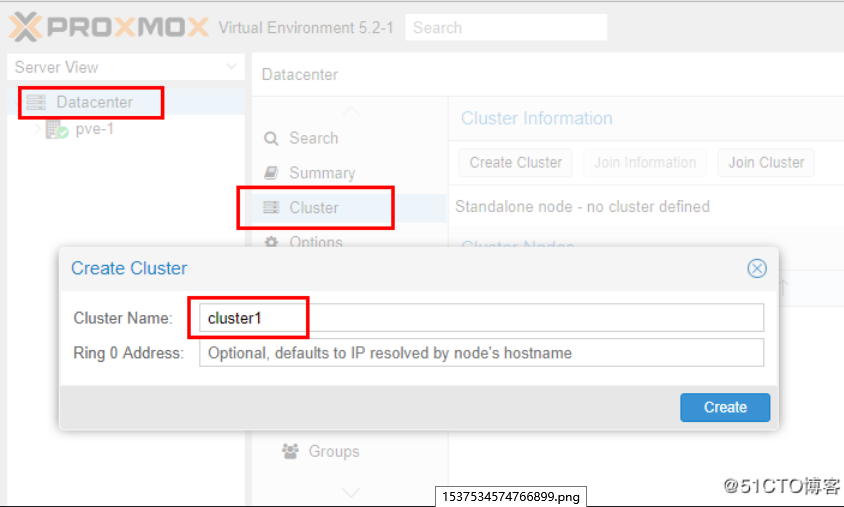
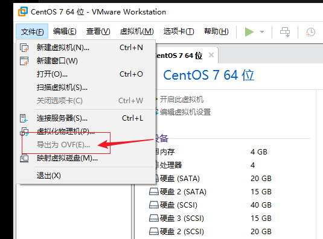
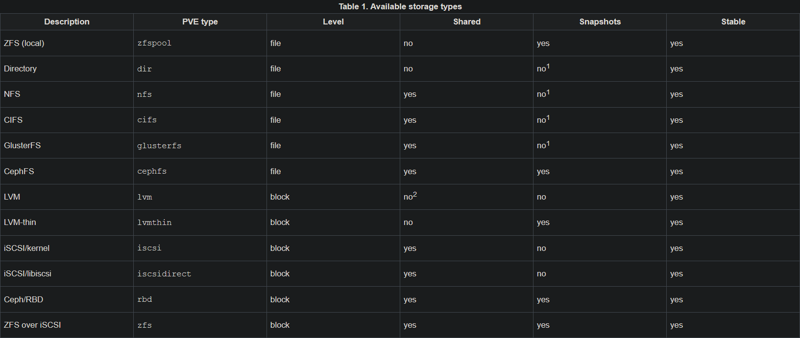
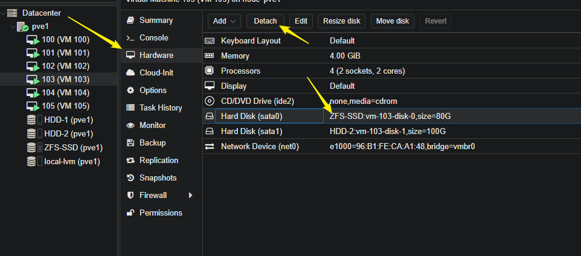
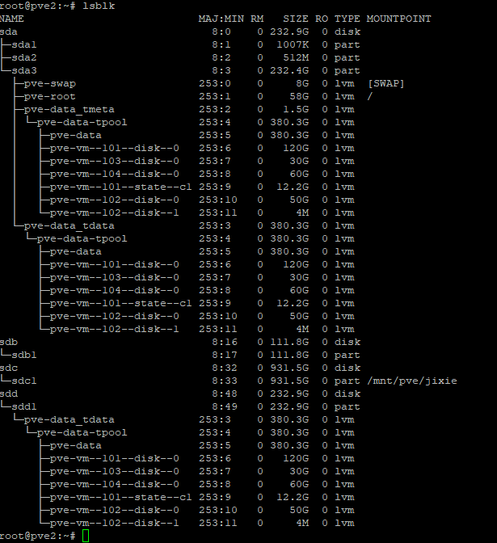
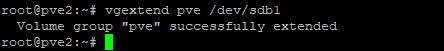
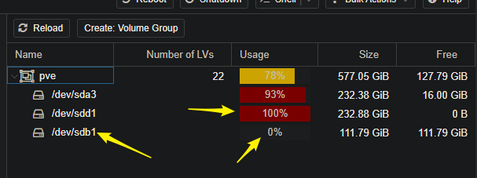
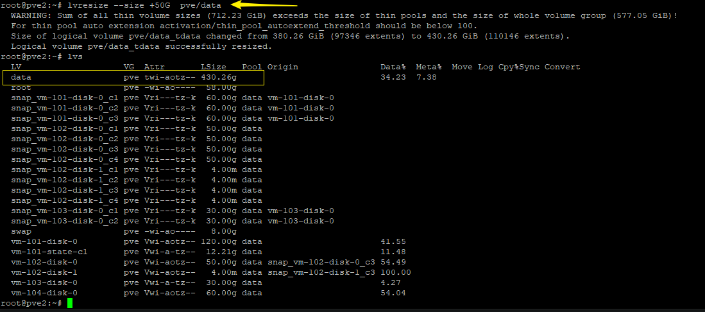
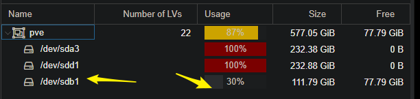

这里总结我使用PVE的一些坑
集群创建
首先在三台实体机上安装pve
安装完成后，在其中一台创建集群。登陆PVE的网页管理界面

- 接下来，在其他2个pve节点，执行
# pvecm add 10.0.77.170 ;其中10.0.77.170是上面创建集群的实体机的ip地址
加入完成之后，可以通过命令在任何一个节点上查看集群情况
# pvecm status
如果要查看集群日志，可以看文件 /var/log/daemon.log
集群建立完成之后，任何一个pve节点的web管理界面视图都可以管理整个集群
删除节点
# pvecm delnode pve
降低Cluster
有时候，集群出现错误，比如某些节点发生故障，或网络错误。这时候，一些操作无法完成，甚至虚拟机无法开启
Cluster 中節點數量低於 2 時， Cluster 就會被鎖住，會陷入「no quorum」的狀態暫時把 Cluster 的期待數量從 2 降低為 1
# pvecm expected 1
重新啟動 Proxmox VE Cluster
# service pve-cluster restart
参考资料
http://blog.ilc.edu.tw/blog/index.php?op=printView&articleId=689007&blogId=25793
迁移或复制没有节点
如果你想迁移虚拟机到其他节点，但是迁移并没有其他节点的选项，那
在每个节点的shell输入
# pvecm updatecerts -f
迁移过程中出现如下报错
found local disk 'local:iso/cn_windows_server_2012_r2_vl_with_update_x64_dvd_6052729.iso' (referenced by snapshot(s))说明要迁移的虚拟机上面有挂载 iso 光盘镜像，需要先移除，包括快照里面的iso，也要移除
https://blog.csdn.net/weixin_34185560/article/details/91830209
克隆备份
克隆：两个节点直接复制虚拟机，不需要重复创建虚拟机
备份：将虚拟机备份到一个文件，如果重装了PVE ，可以直接使用备份文件恢复虚拟机
PVE 克隆不能克隆到其他节点
解决方法：先克隆到本节点，然后迁移
vmware 虚拟机迁移到 pve (Beta)
这个了解即可，我实验失败了，可用的迁移方式见另一个文档
导出vmware 虚拟机

将刚才导出的vmdk文档迁移到pve节点上
执行 格式转换
qemu-img是專門虛擬磁盤映像文件的qemu命令行工具
# qemu-img convert -f vmdk -O 原始映象檔名稱.vmdk 新虛擬機名稱.qcow2
參數說明：convert 將磁盤文件轉換為指定格式的文件
-f 指定需要轉換文件的文件格式
-O 指定要轉換的目標格式
轉換完成後，將新生產一個目標映像文件，原文件仍保存。
附加
raw轉qcow2
# qemu-img convert -f raw centos.img -O qcow2 centos.qcow2
上传ISO镜像，通过sftp上传到以下目录/var/lib/vz/template/iso，但这里上传的iso只能本机显示，如果要让集群中其它的主机也能共享iso，那就要用到共享存储，比如NFS
PVE qm 命令
过命令“qm importdisk”来实现，qm是QEMU/KVM虚拟机的管理工具，可以将指定的磁盘映像导入到指定的虚拟机的存储中，后面要加所需的命令和参数，具体的格式如下：
# qm importdisk
下面是一个具体的实例：
# qm importdisk 201 vm-201-disk-1.qcow2 local-lvm
其中，VM的ID为201，磁盘文件为“vm-201-disk-1.qcow2”，存储为“local-lvm”。
# qemu-img convert -f vmdk /mnt/usb/windows-server/windows-server.vmdk -O qcow2 /var/lib/vz/images/100/windows-server.qcow2
PVE 虚拟机无法拍摄快照
如果你的虚拟机里的磁盘格式不支持快照，也就无法做快照
下面的PVE官方的说明

要拍快照，可以先把不支持的磁盘卸载掉，然后再做快照

为 local-lvm 增加容量
local-lvm 这个地方一般放置虚拟系统的磁盘文件，很容易爆满，因此。有时，我们需要增加硬盘
进入PVE的后台操作：
首先，停止系统，将固态硬盘接入。然后启动系统
进入系统查看情况
# lsblk
# fdisk /dev/sd?

我新添加的硬盘是sdb，并且为它分了一个sdb1的主分区
然后
pvcreate /dev/sdb1
proxmox里面默认只有一个卷组，名字叫pve，可以通过执行下面命令查看
vgs
我们将添加的硬盘加入到pve这个卷组中去
vgextend pve /dev/sdb1

这一步完成后，我们去网页前台，可以看到已经添加成功，但是还没有生效

之后我们查看一下逻辑卷组，其中，data就是我们需要添加容量的逻辑卷
lvs

之后，开始扩展容量
lvresize –size +50G pve/data
pve 是卷组， data是逻辑卷

可以看到，data逻辑卷已经扩容
我们返回前台，容量已经用到了
